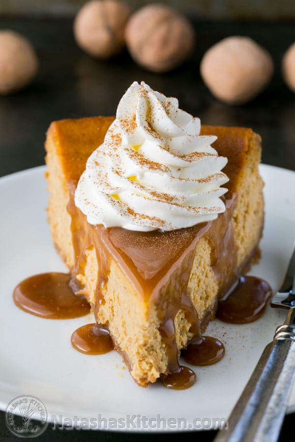

Pumpkin Cheesecake

Holiday Favorite
One of my all time favorite holiday desrets! If you're like me.... you won't wait till Fall to enjoy this goody!!
Run to the store so and get everything listed below so you can follow along and have this wonderful desert ready for dinner!
Ingredients
- Canned pumpkin
- Cream Cheese
- Vanilla
- Sugar
- Heavy Cream
- Pumpkin pie spice
- Eggs
Steps
- Pulse graham crackers in a food processor until fine crumbs form.
- In a medium bowl, stir together 1 1/2 cups graham cracker crumbs, 1 Tbsp sugar, 1/2 tsp cinnamon and 6 Tbsp melted butter.Transfer into 9-inch springform pan with 3″ tall walls and use a large spoon to press crumbs into the bottom of your springform pan, and going about 1/2″ up the sides of the pan. Bake at 350˚F for 8 minutes. Remove from oven and cool to room temp.
- Preheat Oven to 350˚F.
- In the bowl of your mixer with the paddle attachment, beat the 3 packages of softened cream cheese and 1 1/2 cups brown sugar on med speed until light and fluffy and without lumps (5 min), scraping down the bowl once to make sure you don’t have chunks of cream cheese. Tip: brown sugar is considered “packed” when it holds it’s shape as it comes out of the measuring cup.
- In a separate bowl, using a whisk, stir together 15 oz pumpkin pie mix, 4 large eggs, 1/4 cup sour cream, 2 Tbsp flour, 2 tsp pumpkin pie spice, 1/4 tsp salt and 1 Tbsp vanilla extract. Mix until well combined. Add this mixture to the cheesecake filling and continue mixing on low speed just until well combined, scraping down the bowl as needed.
- Transfer filling into pre-baked crust and bake on the middle rack at 350˚F for 1 hour. Turn off heat, prop the oven door open slightly with a wooden spoon and let cheesecake sit in the oven another 45 min. Then remove from the oven and let cool to room temp before covering with plastic wrap and refrigerating. Serve when fully chilled (at least 4 hours in the refrigerator, or overnight).
- Before serving, carefully remove cheesecake from springform pan by running a blunt knife along the sides of the cheesecake to release from the springform mold. Add desired toppings (see list above) and serve.